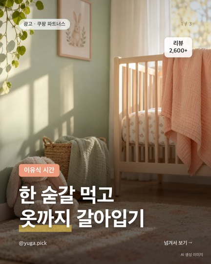
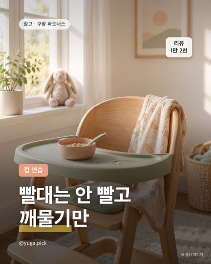
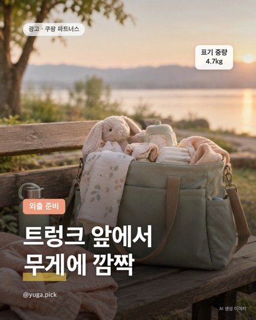
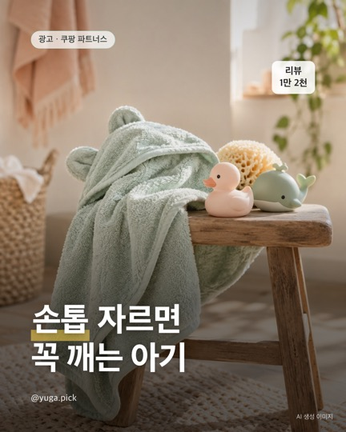
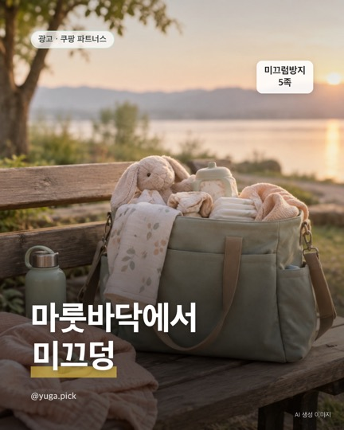
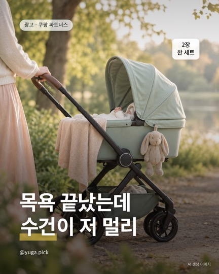
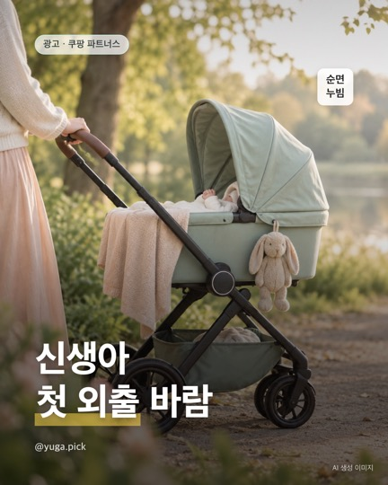

이 페이지는 쿠팡 파트너스 활동의 일환으로, 이에 따른 일정액의 수수료를 제공받습니다.
육아템 정리노트
@yuga.pick · 육아템 (0~5세 육아용품·소모품·놀이)
번호는 Instagram 글에 적힌 번호와 같아요. 가격·재고는 쿠팡에서 다시 확인해 주세요.
🔎 사기 전 비교 유튜브 비교 영상에서 오셨다면 여기
신생아 가습기 추천 비교 2026
- 아기 방 하나면 소음 표기가 낮은 1.7리터 소형, 세이닉 25데시벨, 더편한 28데시벨.
- 가열식은 뜨거운 김이 나오니 침대에서 떨어진 높은 곳에 두세요.
- 아이가 버튼을 만질 나이라면 버튼 잠금이 있는 조지루시.
🎬 영상 속 준비물 쇼츠에서 보고 오셨다면 여기
새벽 수유 때 손수건 어딨지
아기 서랍 정리함
쿠팡에서 아기 서랍 정리함 보기 (광고)출산가방에서 제일 많이 쓰는 것
출산준비물
쿠팡에서 출산준비물 보기 (광고)기저귀 특가인 줄 알았는데
기저귀
쿠팡에서 기저귀 보기 (광고)번호별 추천
🔥 요즘 특가 확인 시각 기준 · 할인은 바뀔 수 있어요

한 숟갈 먹고 옷까지 갈아입기
- 첫 페이지 10개 중
- '이유식' 언급 10건
- '세척·씻기' 언급 8건
- '딱딱·뻣뻣' 비교 3건
무쉬 아기 실리콘 방수 턱받이 A타입 1개
쿠팡에서 가격·후기 보기 (광고)원문 글 보기전체 추천

빨대는 안 빨고 깨물기만
- 빨대컵 연습 시작했는데 빨대는 안 빨고 깨물기만 하는 거 국룰임?ㅋㅋ
- 처음엔 컵 하나로 끝내기보다 아기한테 맞는 단계부터 보는 집 많음
- 릿첼 AQ 첫걸음 머그 스텝업 빨대컵 세트 150ml
- 상품 페이지 표기: 최소 6개월 · PP 소재
릿첼 AQ 첫걸음 머그 스텝업 빨대컵 세트 150ml
쿠팡에서 가격·후기 보기 (광고)원문 글 보기
트렁크 앞에서 무게에 깜짝
- 유모차 트렁크에 넣다가 무게 때문에 허리 삐끗할 뻔한 순간, 다들 알지?ㅋㅋ
- 외출용 휴대 유모차는 무게랑 기내반입부터 보는 집 많음
- 조이로 JR2 휴대용 접이식 유모차
- 상품 페이지 표기: 중량 4.7kg · 최대 15kg · 기내반입 가능
조이로 JR2 휴대용 초경량 기내반입 접이식 유모차
쿠팡에서 가격·후기 보기 (광고)원문 글 보기
손톱 자르면 꼭 깨는 아기
- 아기 손톱 자르려고 하면 꼭 그때 깨서 손 휘젓는 거 국룰임?ㅋㅋ
- 그래서 다들 자는 동안 몰래 깎더라
- 마더케이 영유아 핀셋 네일케어 4종 세트
- 14,500원(10/3 확인, 바뀔 수 있어요)
마더케이 영유아 핀셋 네일케어 4종 세트
쿠팡에서 가격·후기 보기 (광고)원문 글 보기
마룻바닥에서 미끄덩
- 마룻바닥에서 아기가 미끄덩해서 심장 철렁한 사람 손✋
- 양말만 신겨도 덜 미끄러진다는 집 많더라
- 비바세븐 아동용 미끄럼방지 중목 양말 5족
- 10,490원(10/3 확인, 바뀔 수 있어요)
비바세븐 아동용 위시 미끄럼방지 중목 양말 5족
쿠팡에서 가격·후기 보기 (광고)원문 글 보기
목욕 끝났는데 수건이 저 멀리
- 목욕 끝나고 아기 들어 올렸는데 수건이 저 멀리 있는 거 국룰임?ㅋㅋ
- 날 추워지면 이 몇 초가 제일 급함
- 리틀그립 아기 후드타올 2개 세트
- 10,440원, 한 장에 5,220원꼴(10/3 확인, 바뀔 수 있어요)
리틀그립 아기 후드타올 2개 세트
쿠팡에서 가격·후기 보기 (광고)원문 글 보기
신생아 첫 외출 바람
- 신생아 데리고 첫 외출하는데 바람 불어서 꽁꽁 싸매게 되는 사람 손✋
- 이 시기 출산이면 겉싸개 두께 고민 꼭 함
- 아이레빗 신생아 순면 곰 누빔 겉싸개
- 23,900원(10/3 확인, 바뀔 수 있어요)
아이레빗 신생아 순면 곰 누빔 겉싸개
쿠팡에서 가격·후기 보기 (광고)원문 글 보기
무늬보다 받침 모양부터
- 받침이 벌어지는지
- 숙여도 버티는지
- 물로 헹궈 끝나는지
- 옵션 타입 이름 확인
무쉬 실리콘 방수 턱받이 A타입 1개
쿠팡에서 가격·후기 보기 (광고)원문 글 보기
하루 몇 장씩 빨래통으로 가요
- 재질 순면 표기 · 36×36cm
- 10장 묶음
- 상품평 9,871개
- 판매자 배송비 따로 확인
오즈맘 유아동용 가제손수건 10p
쿠팡에서 가격·후기 보기 (광고)원문 글 보기
큐브가 작아졌다면 볼 것 3가지
- 실제 담기는 용량
- 데우기·냉동 표기
- 한 손에 드는 무게
락앤락 바로한끼 이유식 원형 보관용기 230ml 3개
쿠팡에서 가격·후기 보기 (광고)원문 글 보기
1매 8원이면 얇을 것 같지?
- 보통이에요 31
- 두꺼워요 13
- 얇아요 1
- '정말 촉촉해요' 29
베베앙 120 유아물티슈 캡형, 50g, 120매, 10개
쿠팡에서 가격·후기 보기 (광고)원문 글 보기
디럭스 있는데 하나 더 사야 할까?
- 중량 4.7kg · 최대 15kg
- 기내반입 가능 표기
- 상품평 310개 · 판매자 쿠팡(주)
- KC 인증 표기
조이로 JR2 휴대용 초경량 기내반입 접이식 유모차
쿠팡에서 가격·후기 보기 (광고)원문 글 보기
1매 10원 물티슈, 낮은 별점의 공통점
- 얇다·얇아졌다 13건
- 예전과 달라졌다 11건
- 건조하다 8건
- 55g · 100매 × 10팩
코멧 시그니처 아기물티슈 엠보싱 캡형 55g 100매 × 10팩
쿠팡에서 가격·후기 보기 (광고)원문 글 보기
처음 고를 땐 라벨 3곳만 보세요
- 제형·용도: 액상 / 섬유용
- 향: 유향 / 무향
- 100ml당 가격으로 비교
- 리필형은 본통 따로 필요
네이쳐러브메레 유아 오리지널 세제 리필형 허브가든향 1.3L, 2개
쿠팡에서 가격·후기 보기 (광고)원문 글 보기
뽀로로 스푼·포크 세트
- 구성: 스푼 + 포크 + 케이스
- 재질: 스테인리스 · 혼합색상
- 상품평 2,004개
- 크기·월령은 상세 설명에서 확인
릴팡 뽀로로잡스 입체 편한 어린이 스푼 + 포크 + 케이스 세트 PR5980
쿠팡에서 가격·후기 보기 (광고)원문 글 보기
물티슈, 평량부터 보세요
- 평량(g) = 한 장의 두께·무게
- 50g: 가볍게 자주 쓰는 용도
- 70g 이상: 도톰해서 한 장으로 끝내는 용도
- 매수 × 가격으로 1매당 가격도 확인
베베숲 오리진 유아물티슈 캡형 50g 100매 10개
쿠팡에서 가격·후기 보기 (광고)원문 글 보기
그린베베 국내생산 봄가을용 엔젤 이중지 수면조끼
- 새벽마다 이불 걷어찬 아기 다시 덮어주느라 깨는 시기, 있죠.
- 그래서 이불 대신 '입히는 이불', 수면조끼를 찾는 분이 많아요.
- 봄가을용으로 하나 정리해 둘게요.
- · 그린베베 엔젤 이중지 수면조끼
그린베베 국내생산 봄가을용 엔젤 이중지 수면조끼
쿠팡에서 가격·후기 보기 (광고)원문 글 보기